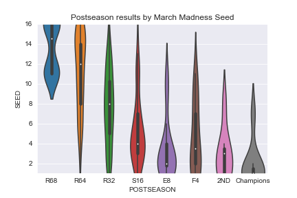
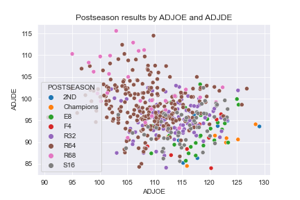
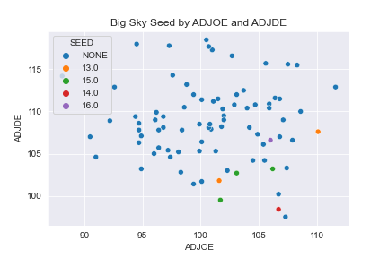

March Madness Data
By Camdin Dirnberger
I wanted to see what leads to success during March Maddness. To achive this I found historical data for the tournament with a data from Kaggle called College Basketball Dataset.
This Dataset is from 2013 through the 2021 season. Some variables in this dataset include team name, conference, games played, wins, ect...
⚹ Hover over the graphs to enlarge them!
The Code
The Data

As this violin plot shows, the higher seeds, as expected, makes it farther into the tournament. So as a 1 seed your way more likely to make it to the championship then the 14-16 seed.
The selection committee seems to make the correct choses on seed for teams with very little outliers. The low seeds are knocked out early and the high make it far.

ADJDE and ADJOE are Adjusted Defensive Efficiency and Adjusted Offensive Efficiency. These numbers a calculated by An estimate of the
defensive or offensive efficiency (points allowed/scored per 100 possessions) a team would have against the average Division I offense.
The higher the ADJOE the better that teams offense was and the lower the ADJDE the better that teams defense was.
The bottom right of this graph is where the teams with the best Adjusted Offensive Efficiency and best Adjusted Defensive Efficiency lie.
There are teams that have a really good offense or defense but still don't make it far into the tournament. As this graph shows the teams the
get farthest into the tournament and have a really good mix of offense and defense. Neither are bad. There are very little teams that have lower than
95 ADJDE and higher than 115 ADJOE that don't make it to at least the round of 32 and many make it a lot farther.
Big Sky Basketball Data
I am a big Montana Griz fan and they are in the Big Sky Conference so I wanted to see what leads a
team to get the Auto Bid to March Madness and what seed is of the teams that makes it. To do this I took the
same data from before and took just the teams in the Big Sky conference. I first look at a scatterplot of all the teams
Adjusted Offensive Efficiency by their Adjusted Defensive Efficiency and then colored each point based on what seed they
got in the tournament. If a team didn't make it into the tournament it falls in the None seed. The graph below is the results.

Describe the graph above!